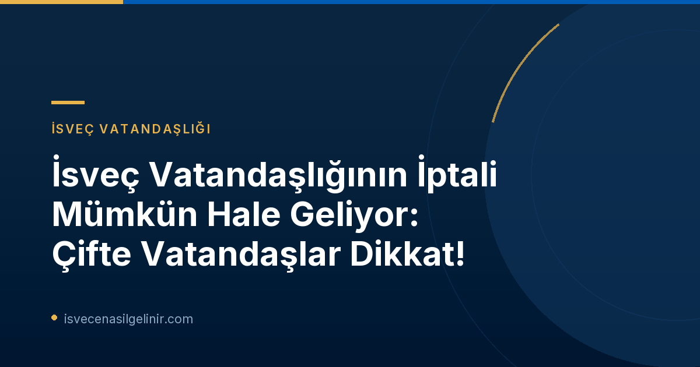

İsveç Vatandaşlık İptali Kararı: Temel Değişiklikler ve Yürürlük Tarihleri
İsveç Parlamentosu (Riksdagen), uzun süredir tartışılan ve kamuoyunda geniş yankı uyandıran bir konuda tarihi bir karar alarak, İsveç vatandaşlığının belirli durumlarda iptal edilmesine imkan tanıyan bir anayasa değişikliğini onayladı. Bu önemli değişiklik, 1 Ocak 2027 tarihinde yürürlüğe girecek. Ancak bu, sürecin tamamlandığı anlamına gelmiyor.
Anayasa değişikliğinin tam olarak uygulanabilmesi için, İsveç Vatandaşlık Yasası (lagen om svenskt medborgarskap) başta olmak üzere ilgili yasalarda da düzenlemeler yapılması gerekiyor. Bu yasa değişikliklerinin nasıl şekillendirileceği konusunda özel bir komisyon tarafından hazırlanan SOU 2026:21 sayılı rapor, detaylı öneriler sunuyor. Raporda, söz konusu yasa değişikliklerinin 1 Ocak 2028 tarihinde yürürlüğe girmesi öneriliyor. Ancak bu önerinin henüz yasa koyucu tarafından nihai olarak karara bağlanmadığını belirtmek gerekir.
| Değişiklik Türü | Yürürlük Tarihi | Açıklama |
|---|---|---|
| Anayasa Değişikliği | 1 Ocak 2027 | İsveç vatandaşlığının belirli durumlarda iptal edilmesinin hukuki zemini oluşturuldu. |
| İlgili Yasa Değişiklikleri | 1 Ocak 2028 (Öneri) | Anayasa değişikliğinin uygulanması için gerekli yasal düzenlemelerin yürürlüğe girmesi bekleniyor. (Henüz karar bağlanmadı) |
Kimler Risk Altında? İsveç Vatandaşlığının İptal Edilebileceği Durumlar
Yeni düzenleme, herkesi değil, özellikle çifte vatandaşlığı olan kişileri ilgilendiriyor. İsveç vatandaşlığının iptal edilebileceği iki temel durum öngörülüyor:
1. Yanlış Beyanlarla Elde Edilen Vatandaşlık
Bu madde, İsveç vatandaşlığını haksız veya yanıltıcı yollarla elde eden kişileri kapsıyor. Örnek olarak:
- Kişinin bilerek yanlış veya yanıltıcı bilgiler sunarak vatandaşlık alması.
- Başvuru sürecinde dolandırıcılık veya sahtekarlık gibi uygunsuz eylemlerde bulunarak İsveç vatandaşlığını elde etmesi.
Bu tür durumlar, başvuru sahibinin vatandaşlık elde etme sürecindeki dürüstlüğünü ve yasalara uygunluğunu sorgulayacaktır. Yalan beyanla elde edilmiş vatandaşlıklar için geri alma süreci, titizlikle incelenecektir.
2. Çok Ciddi Suçlar İşlenmesi
İkinci durum ise, İsveç'in ulusal güvenliğini veya hayati çıkarlarını ciddi şekilde tehdit eden suçları kapsıyor. Bu suçlar genellikle şu kategorilere girer:
- İsveç'in güvenliğini tehlikeye atan terör eylemleri veya terörle bağlantılı suçlar.
- Ülkenin kritik altyapısına veya savunma sanayisine yönelik sabotaj gibi eylemler.
- Uluslararası ilişkileri ciddi şekilde zedeleyen veya ülkenin prestijine zarar veren çok ağır suçlar.
Bu tür suçlar, kişinin İsveç toplumuna olan bağlılığını ve ülkenin değerlerine saygısını ciddi şekilde sorgulatacaktır.
Önemli İstisna: Vatansız Kalma Durumu
Yapılan bu düzenlemede çok önemli bir kırmızı çizgi bulunmaktadır: Hiçbir durumda, İsveç vatandaşlığının iptali sonucunda kişinin vatansız kalmasına izin verilmeyecektir. Bu kural, uluslararası hukukun temel prensiplerinden biri olan vatansızlığın önlenmesi ilkesine uygun olarak getirilmiştir. Bu, vatandaşlık iptalinin ancak kişinin çifte vatandaşlığının olması durumunda veya iptal edildikten sonra başka bir ülkenin vatandaşlığını alabilecek durumda olması halinde mümkün olacağı anlamına geliyor.
Migrationsverket Süreci Takip Ediyor
İsveç Göçmenlik Ofisi (Migrationsverket), bu önemli yasal süreçteki gelişmeleri yakından takip etmektedir. Anayasa değişikliğinin yürürlüğe girmesi ve ilgili yasa değişikliklerinin netleşmesinin ardından, Migrationsverket yeni kuralların detayları ve uygulama süreçleri hakkında kamuoyunu bilgilendirecektir. Bu nedenle, ilgili kişilerin Migrationsverket’in resmi duyurularını takip etmeleri büyük önem taşımaktadır.
Bilgi Kutusu: Çifte Vatandaşlık ve Yeni Düzenleme
İsveç, çifte vatandaşlığa izin veren ülkelerden biridir. Ancak bu yeni düzenleme, çifte vatandaşların İsveç vatandaşlığını elde etme veya koruma süreçlerinde daha dikkatli olmalarını gerektirecektir. Özellikle yanlış bilgi beyanı veya ciddi suçlara karışma gibi durumlar, vatandaşlık statülerini doğrudan etkileyebilir.
Sıkça Sorulan Sorular (SSS)
Bu değişiklikler çifte vatandaşlığı etkiliyor mu?
Evet, yeni düzenleme özellikle çifte vatandaşlığı olan kişileri hedef almaktadır. Tek vatandaşlığı olan ve vatandaşlığının iptali durumunda vatansız kalacak kişiler bu karardan etkilenmeyecektir.
Vatandaşlık başvurum devam ederken ne yapmalıyım?
Başvurunuz devam ederken, başvurunuzda verdiğiniz tüm bilgilerin doğru ve eksiksiz olduğundan emin olmalısınız. Yanlış veya yanıltıcı bilgi vermekten kesinlikle kaçınmalısınız. Güncel gelişmeler için Migrationsverket'in resmi duyurularını takip edebilirsiniz.
İsveç'te doğmuş ve çifte vatandaş olanlar da etkilenecek mi?
Kanun metninde "vatandaşlığını yanlış beyanlarla elde edenler" ve "çok ciddi suçlar işleyenler" ifadeleri yer almaktadır. İsveç'te doğan ve otomatik olarak vatandaşlık alan kişiler bu kategoriye girmemekle birlikte, yine de ciddi suçlar işlemeleri durumunda çifte vatandaşlıkları nedeniyle risk altında olabilirler. Ancak vatansız kalma durumu bu kişiler için de geçerli bir istisnadır.
Referanslar:
- Migrationsverket Resmi Duyurusu
- SOU 2026:21 Raporu (Detaylı bilgi için)
- sverigemedborgarskapsprov.com
İsveç Vatandaşlık Süreçleri Hakkında Güncel Bilgiler İçin Bizi Takip Edin!
İsveç'te yaşam, göçmenlik ve vatandaşlık süreçleri hakkında en doğru ve güncel bilgilere ulaşmak için ve İsveç Vatandaşlık Testi hazırlığınız için web sitemizi ve sosyal medya kanallarımızı takipte kalın. Uzman ekibimiz, süreç boyunca size rehberlik etmek için burada.